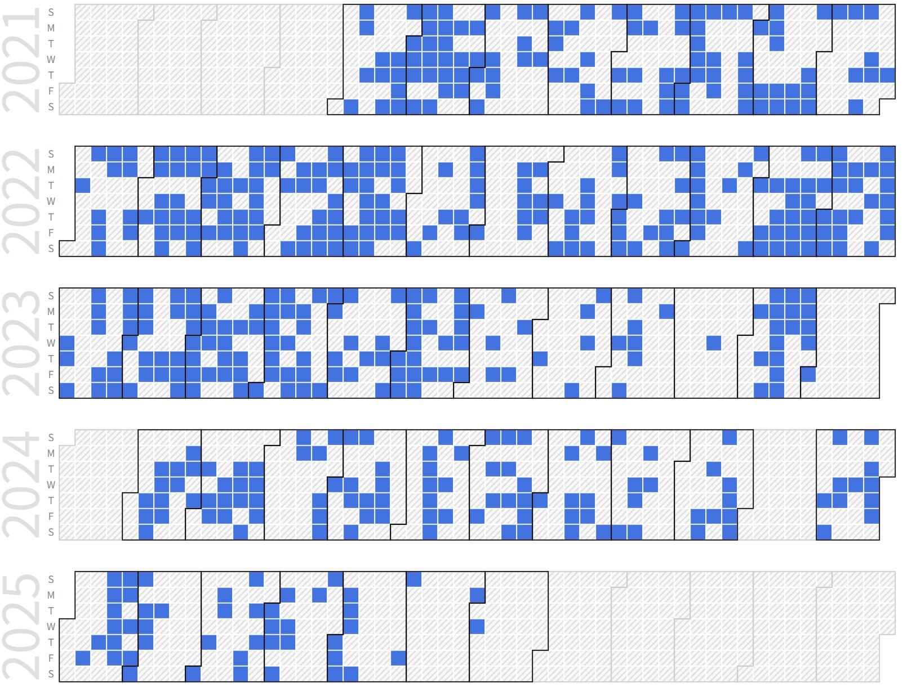

Sunghoon Hong (Ph.D. Candidate, SYSCON Robotics)
 |
Ph.D. Prospective Candidate |
Repository Commit History
|  |
Introduction
Full Bio Sketch
Sunghoon Hong (Ph.D. Course) received the M.S. degree in Intelligent Robot Engineering at Hanyang University, Seoul, Korea, in 2016. His main interest is Human-Like Autonomous Driving Systems. He has a lot of experience in autonomous driving technologies such as SLAM (Simultaneous Localization And Mapping), ADAS (Advanced Driver Assistance Systems), PID (Proportional-Integral-Differential) control, machine learning, path-planning and navigation algorithms and has published several journal/conference papers. Currently, He was a research engineer at Carnavicom.Co., Ltd. from 2021 and Department of Electronics, Kyungpook National University, Daegu, Korea from 2021. He is researching technologies to optimize deep learning-based object detection algorithms for human-like artificial intelligence autonomous driving systems to be applied to low-power embedded systems.
Research Topic
Eyes are the most important factor for a person to drive a vehicle. Human-like autonomous driving systems use camera sensors to recognize vehicles, bicycles, people, lanes, roads, signs, traffic lights, etc. through deep learning technology. This information helps estimate the vehicle's current location and drive autonomously along its global path to its final destination. However, there is a limit to directly applying deep learning technology to embedded systems, algorithm optimization techniques are required. In this way, I would like to intensively research optimization techniques to develop vision-based human-like autonomous driving technologies in real-time low power embedded systems.
Runtime ML-DL Hybrid Inference Platform Based on Multiplexing Adaptive Space-Time Resolution for Fast Car Incident Prevention in Low-Power Embedded Systems
 Forward vehicle detection is the key technique to preventing car incident in front. Artificial intelligence (AI) techniques are used to more accurately detect vehicles, but AI-based vehicle detection takes a lot of processing time due to its high computational complexity. When there is a risk of collision with a vehicle in front, the slow detection speed of the vehicle may lead to an accident. To quickly detect a vehicle in real-time, a high-speed and lightweight vehicle detection technique with similar detection performance to that of an existing AI-based vehicle detection is required. Also, to apply forward collision warning system (FCWS) technology to vehicles, it is important to provide high performance based on low-power embedded systems because the vehicle’s battery consumption must remain low. The vehicle detection algorithm occupies the most resources in FCWS. To reduce power consumption, it is important to reduce the computational complexity of an algorithm, that is, the amount of resources required to run it. This paper describes a method for fast, accurate forward vehicle detection using machine learning and deep learning. To detect a vehicle in consecutive images consistently, a Kalman filter is used to predict the bounding box based on the tracking algorithm and correct it based on the detection algorithm. As a result, its vehicle detection speed is about 25.85 times faster than deep-learning-based object detection is, and its detection accuracy is better than machine-learning-based object detection is.
Forward vehicle detection is the key technique to preventing car incident in front. Artificial intelligence (AI) techniques are used to more accurately detect vehicles, but AI-based vehicle detection takes a lot of processing time due to its high computational complexity. When there is a risk of collision with a vehicle in front, the slow detection speed of the vehicle may lead to an accident. To quickly detect a vehicle in real-time, a high-speed and lightweight vehicle detection technique with similar detection performance to that of an existing AI-based vehicle detection is required. Also, to apply forward collision warning system (FCWS) technology to vehicles, it is important to provide high performance based on low-power embedded systems because the vehicle’s battery consumption must remain low. The vehicle detection algorithm occupies the most resources in FCWS. To reduce power consumption, it is important to reduce the computational complexity of an algorithm, that is, the amount of resources required to run it. This paper describes a method for fast, accurate forward vehicle detection using machine learning and deep learning. To detect a vehicle in consecutive images consistently, a Kalman filter is used to predict the bounding box based on the tracking algorithm and correct it based on the detection algorithm. As a result, its vehicle detection speed is about 25.85 times faster than deep-learning-based object detection is, and its detection accuracy is better than machine-learning-based object detection is.
Continuous Differential Image-based Fast Convolution for Convolutional Neural Networks
 Convolutional neural networks with powerful visual image analysis of deep structures are gaining popularity in many research fields. The main difference in convolutional neural networks compared to other artificial neural networks is the addition of many convolutional layers. The convolutional layer improves the performance of artificial neural networks by extracting feature maps required for image classification. However, for applications that require very low-latency on limited processing resources, the success of a convolutional neural network depends on how fast we can compute. In this paper, we propose a novel convolution technique of fast algorithms for convolutional neural networks using continuous differential images. The proposed method improves the response speed of the algorithm by reducing the computational complexity of the convolutional layer. It is compatible with all types of convolutional neural networks, and the lower the difference in the continuous images, the better the performance. We use the darknet network to benchmark the CPU implementation of our algorithm and show state-of-the-art throughput at pixel difference thresholds from 0 to 25 pixels.
Convolutional neural networks with powerful visual image analysis of deep structures are gaining popularity in many research fields. The main difference in convolutional neural networks compared to other artificial neural networks is the addition of many convolutional layers. The convolutional layer improves the performance of artificial neural networks by extracting feature maps required for image classification. However, for applications that require very low-latency on limited processing resources, the success of a convolutional neural network depends on how fast we can compute. In this paper, we propose a novel convolution technique of fast algorithms for convolutional neural networks using continuous differential images. The proposed method improves the response speed of the algorithm by reducing the computational complexity of the convolutional layer. It is compatible with all types of convolutional neural networks, and the lower the difference in the continuous images, the better the performance. We use the darknet network to benchmark the CPU implementation of our algorithm and show state-of-the-art throughput at pixel difference thresholds from 0 to 25 pixels.
Differential Image-based Fast and Compatible Convolutional Layers for Multi-core Processors
 Convolutional neural networks with powerful visual image analysis for artificial intelligence are gaining popularity in many research fields, leading to the development of various high-performance algorithms for convolution operators present in these networks. One of these approaches is implemented with general matrix multiplication (GEMM) using the well-known im2col transform for fast convolution operations. In this paper, we propose a multi-core processor-based convolution technique for high-speed convolutional neural networks (CNNs) using differential images. The proposed method improves the convolutional layer response speed by reducing the computational complexity and using multi-thread technology. In addition, the proposed algorithm has the advantage of being compatible with all types of CNNs. We use the darknet network to evaluate the convolutional layer's performance and show the best performance of the proposed algorithm when using 4-thread parallel processing.
Convolutional neural networks with powerful visual image analysis for artificial intelligence are gaining popularity in many research fields, leading to the development of various high-performance algorithms for convolution operators present in these networks. One of these approaches is implemented with general matrix multiplication (GEMM) using the well-known im2col transform for fast convolution operations. In this paper, we propose a multi-core processor-based convolution technique for high-speed convolutional neural networks (CNNs) using differential images. The proposed method improves the convolutional layer response speed by reducing the computational complexity and using multi-thread technology. In addition, the proposed algorithm has the advantage of being compatible with all types of CNNs. We use the darknet network to evaluate the convolutional layer's performance and show the best performance of the proposed algorithm when using 4-thread parallel processing.
Differential Image-based Scalable YOLOv7-Tiny Implementation for Clustered Embedded Systems
 Convolutional neural networks (CNNs) for powerful visual image analysis are gaining popularity in artificial intelligence. The main difference in CNNs compared to other artificial neural networks is that many convolutional layers are added, which improve the performance of visual image analysis by extracting the feature maps required for image classification. However, algorithm optimization is required to run applications that require low-latency in edge compute modules with limited processing resources. In this paper, we propose a novel algorithm optimization method for fast CNNs by using continuous differential images. The main idea is to reduce computation variably by using the differential value of the input in each convolutional layer. Also, the proposed method is compatible with all types of CNNs, and the performance is better when the pixel value difference of continuous images is low. We use the DarkNet framework to evaluate our algorithm using fast convolution and half convolution approaches on a clustered system. As a result, when the input frame rate is 10 fps, FLOPs are reduced by about 4.92 times compared to the original YOLOv7-tiny. By reducing the FLOPs of the convolutional layer, the inference speed increases to about 4.86 FPS, performing 1.57 times faster than the original YOLOv7-tiny. In the case of parallel processing that used two edge compute modules for using half convolution approach, FLOPs reduced more, and the response speed improved. In addition, faster Object detection implementation is possible by additionally expanding up to 7 compute modules in a scalable clustered embedded system as much as the user wants.
Convolutional neural networks (CNNs) for powerful visual image analysis are gaining popularity in artificial intelligence. The main difference in CNNs compared to other artificial neural networks is that many convolutional layers are added, which improve the performance of visual image analysis by extracting the feature maps required for image classification. However, algorithm optimization is required to run applications that require low-latency in edge compute modules with limited processing resources. In this paper, we propose a novel algorithm optimization method for fast CNNs by using continuous differential images. The main idea is to reduce computation variably by using the differential value of the input in each convolutional layer. Also, the proposed method is compatible with all types of CNNs, and the performance is better when the pixel value difference of continuous images is low. We use the DarkNet framework to evaluate our algorithm using fast convolution and half convolution approaches on a clustered system. As a result, when the input frame rate is 10 fps, FLOPs are reduced by about 4.92 times compared to the original YOLOv7-tiny. By reducing the FLOPs of the convolutional layer, the inference speed increases to about 4.86 FPS, performing 1.57 times faster than the original YOLOv7-tiny. In the case of parallel processing that used two edge compute modules for using half convolution approach, FLOPs reduced more, and the response speed improved. In addition, faster Object detection implementation is possible by additionally expanding up to 7 compute modules in a scalable clustered embedded system as much as the user wants.
Publications
Journal Publications (KCI 2, SCI 5)
Sunghoon Hong and Daejin Park. Vision-based Real-time Vehicle Detection and Tracking Algorithm for Forward Collision Warning (KCI) Journal of the Korea Institute of Information and Communication Engineering, 25(7):962-970, 2021.
Sunghoon Hong and Daejin Park. Lane Detection Based on Inverse Perspective Transformation and Machine Learning in Lightweight Embedded System (KCI) IEMEK Journal of Embedded Systems and Applications, 2022.
Sunghoon Hong and Daejin Park. Runtime ML-DL Hybrid Inference Platform based on Multiplexing Adaptive Space-Time Resolution for Lightweight Object Detection in Low-Power Embedded Systems (SCI) Sensors, 22(8):2998-3011, 2022.
Sunghoon Hong and Daejin Park. On-Chip Realization of Efficient Lane Departure Warning Systems using Inverse Perspective Transformation and Machine Learning-based Lane Prediction (SCI) IEEE Transactions on Intelligent Transportation Systems, 2023.
Sunghoon Hong and Daejin Park. ML-based Fast and Precise Embedded Rack Detection Software for Docking and Transport of Autonomous Mobile Robots using 2-D LiDAR (SCI) IEEE Embedded Systems Letters, 16(4):401-404, 2024.
Sunghoon Hong and Daejin Park. ML-based Fast and Precise Target Docking of Autonomous Mobile Robots for Intelligent Transportation Systems using 2D LiDAR (SCI) IEEE Transactions on Intelligent Transportation Systems, 2024.
Sunghoon Hong and Daejin Park. On-Chip Realization of Efficient Lane Departure Warning Systems using Inverse Perspective Transformation and Machine Learning-based Lane Detection (SCI) (On Writing) IEEE Transactions on Vehicular Technology, 2024.
Conference Publications (Intl. 5)
Seunghoon Hong and Daejin Park. Lightweight Collaboration of Detecting and Tracking Algorithm in Low-Power Embedded Systems for Forward Collision Warning In IEEE ICUFN 2021, 2021.
Sunghoon Hong and Daejin Park. Runtime Virtual Lane Prediction Based on Inverse Perspective Transformation and Machine Learning for Lane Departure Warning in Low-Power Embedded Systems In IEEE IST 2022, 2022.
Sunghoon Hong and Daejin Park. Continuous Image-based Fast Convolution for Convolutional Neural Network In IEEE ICTC 2022, 2022.
Sunghoon Hong and Daejin Park. Differential Image-based Fast and Compatible Convolutional Layers for Multicore Processors In IEEE ICAIIC 2023, 2023.
Sunghoon Hong and Daejin Park. ML-based Fast and Precise Embedded Rack Detection Software for Docking and Transport of Autonomous Mobile Robots using 2D LiDAR In IEEE International Conference on Embeeded Software (EMSOFT 2024), (Recommended to IEEE Embedded Systems Letters), 2024.
Patents (Domestic 1)
Object Detection Method and Object Detection Device Performing the Same In Korea Patent and Tradmark Office, June 2022. Korea Patent Pending
Participation in International Conference
IEEE ICUFN 2021, Jeju, Korea
IEEE IST 2022, Virtual
IEEE ICTC 2022, Jeju, Korea
IEEE ICAIIC 2023, Bali, Indonnesia
IEEE EMSOFT 2024, RALEIGH, NC, USA
Projects
UAV 3-D SLAM (Simultaneous Localization And Mapping) using RGB-D and IMU sensors
FCWS (Forward Collision Warning System) using a single camera
Android app development for in-vehicle ADAS device installation
MCU (Micro Controller Unit) development for display and vehicle control
Precision position control using single camera and magnetic sensor for autonomous mobile robot
Marker-based docking using a single camera for autonomous mobile robot
SLAM (Simultaneous Localization And Mapping) using Lidar and RGB-D sensors for autonomous mobile robot
Path-planning and navigation for autonomous mobile robot
Deep learning-based object detection in low power embedded systems
Last Updated, 2025.05.30